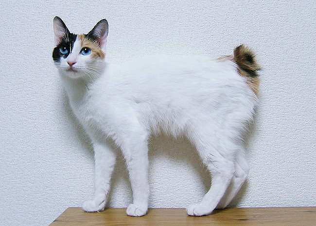
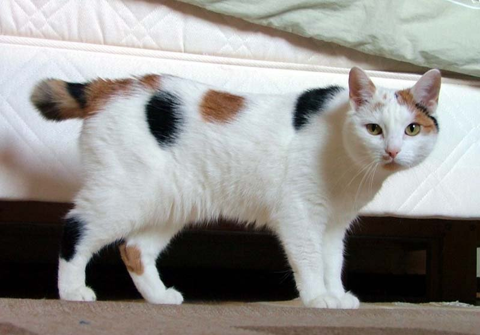
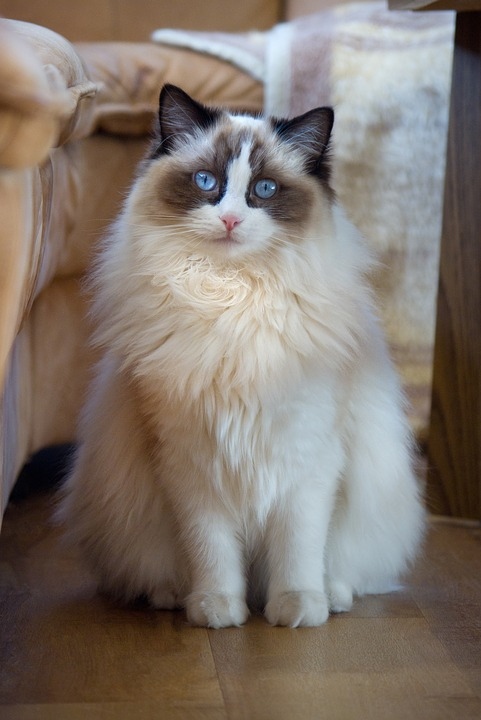
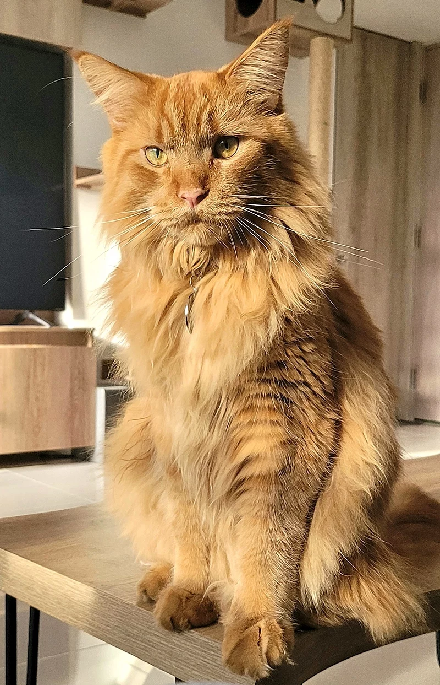
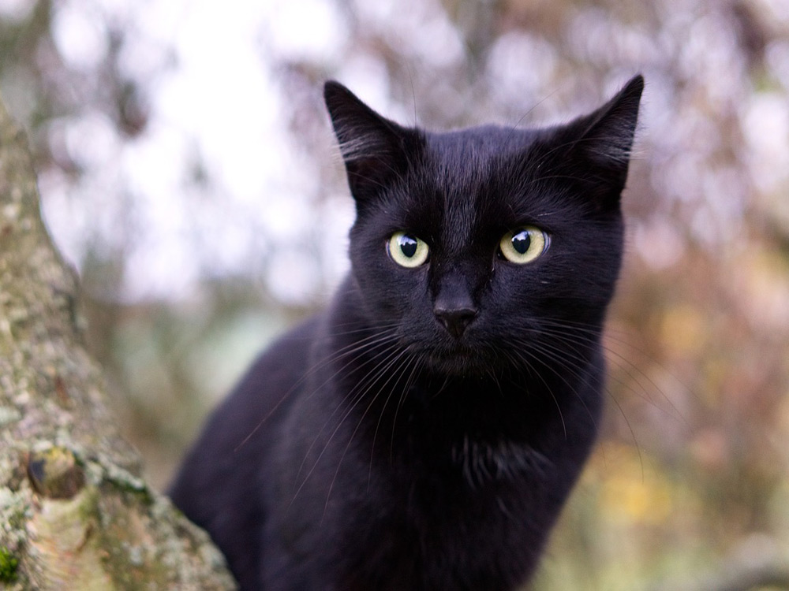
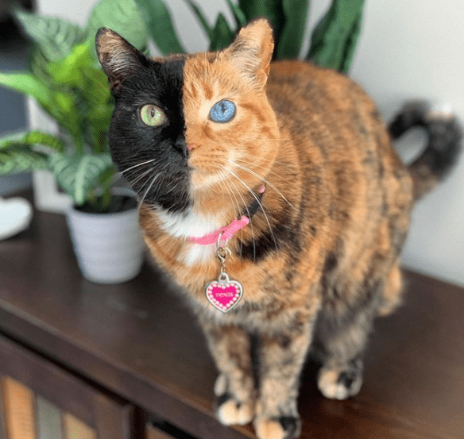
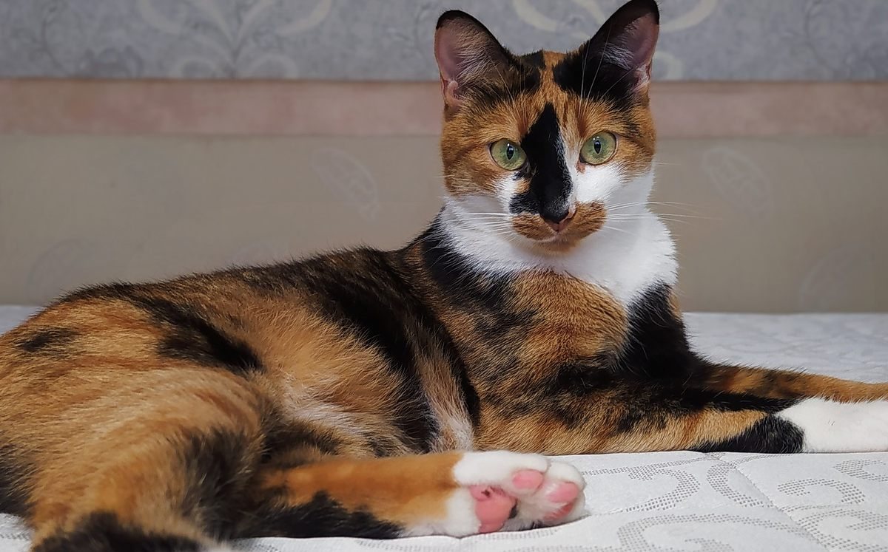
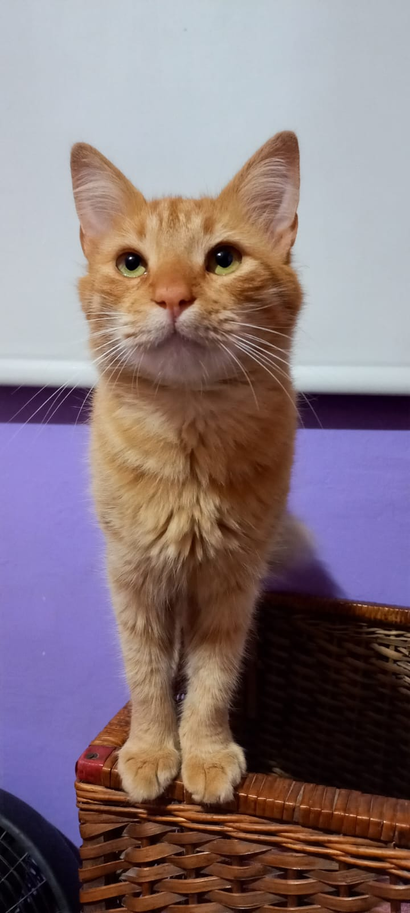
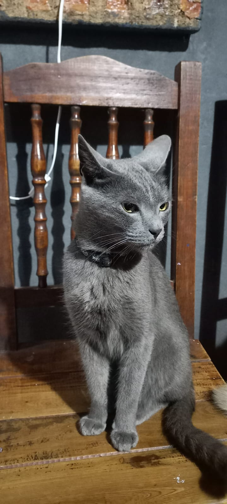

Bienvenidos a Cat-Info
Esto es un pequeño proyecto de página web, de momento solamente estará hecha con HTML. A medida que
vaya
avanzando con mi aprendizaje, estaré actualizando con nuevas tecnologías la misma en distintas
versiones,
pero sin borrar la anterior, para dejar un registro y poder a su vez, ir comparando como fue
evolucionando.
Muchas gracias por pasarse a visitar el sitio.
Cat-Info es un sitio web creado por un solo programador de momento, este lugar busca recopilar y brindar información interesante sobre los gatos (son mi mascota preferida). Desde sus distintas razas a sus cuidados.
Descripción:
Los “felis silvestris catus” o mucho mejor conocidos como gatos, son animales mamíferos lo que significa que gestan a sus crías en sus vientres, a su vez su alimentación es carnívora y pertenecen a la familia de los Felidae. Estos son animales domésticos muy populares, actualmente están en lucha por la corona por popularidad contra los famosos perros. A pesar de su tamaño, estos son cazadores por naturaleza, planeando y utilizando distintas técnicas para llevar a cabo su cacería con éxito. Son animales con un éxito muy elevado a nivel de reproducción, lo que hace que estos deban ser limitados por distintas medidas para evitar invadir y dañar los territorios donde se encuentran.
Posee un abanico muy variado de razas las cuales se pueden dividir en distintas categorías y subcategorías de las mismas como:
- Gatos con pelaje corto: abisinio, american wirehair, americano de pelo corto, etc.
- Gatos con pelaje medio: angora turco, bobtail japonés, chartreux, etc.
- Gatos con pelaje largo: balinés, británico de pelo largo, persa, etc.
Cada una de estas razas, poseen distintos rasgos únicos, pero a su vez también tienen distintas maneras de ser cuidados ya que no todos poseen las mismas necesidades de alimento, de ambiente, etc. Esto sin tener en cuenta las razas mestizas, de las cuales se conforman por cruces de 2 o más razas, provocando que estas tengan varios rasgos únicos.
Historia y mitología:
No se sabe a ciencia cierta desde cuándo el gato ha acompañado al ser humano.
Tradicionalmente se ha asociado su domesticación a los egipcios, los asirios o alguna cultura predecesora a partir del gato salvaje africano. Se han descubierto restos, como un enterramiento en Chipre datado en 9500 años, que sugieren que para entonces ya existía relación. Se cree que los egipcios empezaron a domesticarlos en torno al año 4000 a. C. para mantener a las ratas y ratones fuera de sus graneros. Para los egipcios eran animales sagrados y, como tales, el castigo por matar a uno de estos era la muerte. La diosa Bastet era representada con cabeza de gato. Cuando uno moría, a veces se le momificaba y la familia a la que pertenecía se afeitaba las cejas. La diosa nórdica Freya conducía un carruaje volador tirado por gatos.El resto del gato más antiguo encontrado en la Península Iberia y en España, está en el Yacimiento Arqueológico Gadir, sito en Cádiz, donde se puede apreciar el esqueleto de un gato traído por los fenicios hasta esta ciudad española hace casi 3.000 años.
Sin embargo, durante la Edad Media, se pensaba que eran familiares de las brujas. A veces se los quemaba vivos o se los tiraba desde la cumbre de edificios altos durante las festividades. En el mundo occidental es común la creencia de asociar al gato negro con la mala suerte (aunque hay excepciones, por ejemplo, en el Reino Unido). Para las personas supersticiosas, que se cruce un gato negro de forma súbita, es augurio de infortunios. De hecho, durante el siglo XIII el papa Gregorio IX mandó matar a todos los gatos por considerarlos amigos del demonio, y como consecuencia de este hecho se facilitó la transmisión de la peste bubónica, con lo que fueron exterminados en masa en pueblos y ciudades, contribuyendo a que se multiplicara la población de ratas, auténticos propagadores de la plaga.
Pero en los tiempos actuales la Iglesia católica ha declarado también como santos patrones de los gatos a san Antonio Abad, san Francisco de Asís y san Martín de Porres incluyendo a este felino con los demás animales domésticos, similar a los antiguos egipcios sin importar la raza y el color.
Es uno de los doce animales del ciclo de doce años del zodíaco vietnamita, relacionado con el calendario chino (en este último, el signo zodiacal es el conejo o también gato).
En el Tíbet se los considera desde tiempos inmemoriales guardianes de reliquias y templos posiblemente por la robustez ostensible e inteligencia atribuidas a la variante siamesa que allí en la cima del mundo, se desarrolla. Animal sagrado, venerado y a veces mimado excesivamente, en el seno del budismo tibetano se le considera acompañante en el tránsito obituario, y, en los sueños lúcidos, el subconsciente del que sueña (o viaja) es representado por un gato gigante, obeso, mudo y bonachón.
Se dice que, al Profeta Mahoma, fundador del islam, le gustaban mucho los gatos quienes lo acompañaban en su casa y en sus predicaciones. Una leyenda de Turquía afirma que les permitió entrada al paraíso y que siempre caen de pie porque al Profeta le gustaba acariciarles el lomo. Otra leyenda asegura que, cuando su gata favorita llamada Muezza, se quedó dormida sobre la manga de su túnica, prefirió recortar la manga que despertarla (algunas leyendas afirman que es, a partir del afecto de Muezza que Mahoma permite entrar a los gatos al paraíso y caer siempre de pie). La predilección de Mahoma por los gatos ha provocado que en algunos países musulmanes se les tengan especiales cuidados y cariños.
| Bobtail japonés | Manx |  |  | Ragdoll | Maine Coon |  |  | Monocolor | Bicolor |  |  | Tricolor |  |
|---|
| Chimichurri | Milaneso |  |  |
|---|